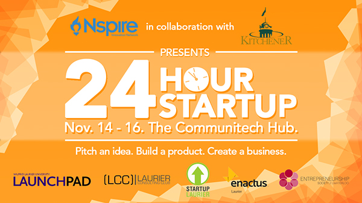
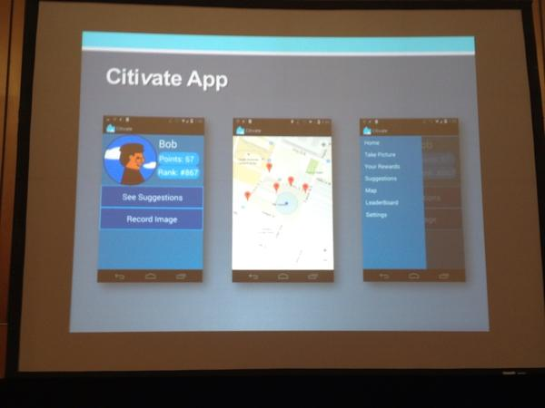
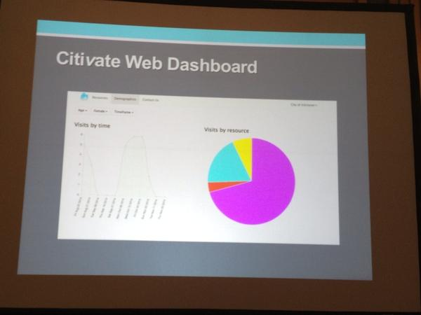
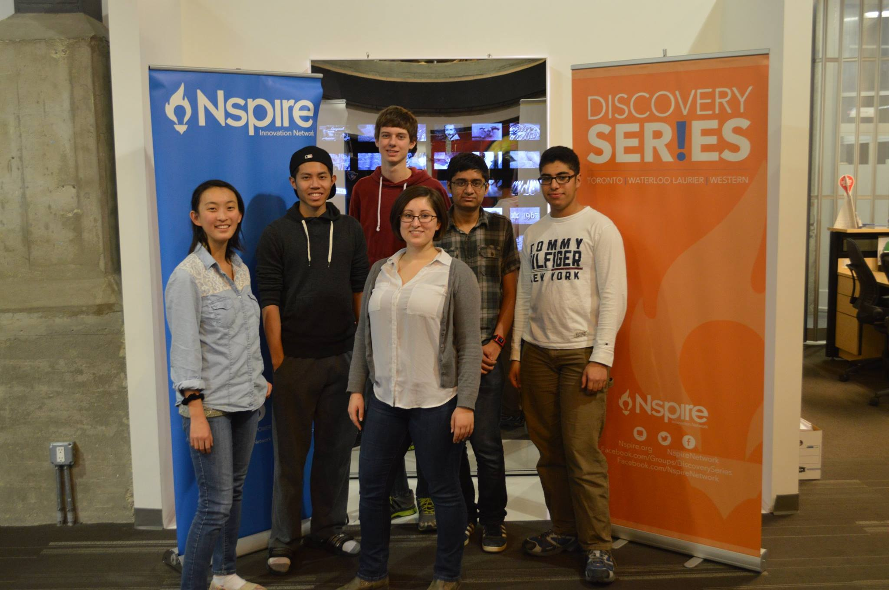

Hackathon
Citivate is a product of the Hackathon: 24 Hour StartUp, hosted by Nspire. The focus of this hackathon was to create a product through the use of the city of Kitchener, Waterloo's open data. Together in a team of 6, we have created a gamification of the city resources. For example, if someone went to the library, they would receive a certain number of points. When a city resource is used, it will populate a database create real-time analytics. This data can then be used by city planners to better allocate funding for city resources.
Although we did not complete the product, nor did we win first place. I felt that I have learned a lot as this was my first ever Hackathon. In the end, we won a prize of $500 for the best use of the city of Kitchener Waterloo's open data!



